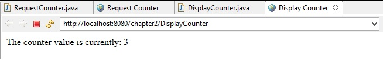

2.4 Sharing Data between Servlets
ServletContext
The ServletContext is a shared memory segment for Web applications. When an object is placed in the ServletContext, it exists for the life of a Web application, unless it is explicitly removed or replaced.
There is one ServletContext per web application and all servlet share it. It can be retrieved via getServletContext() method.
ServletContext has an "application" scope, and can also be used to pass information between servlets within the same application, via methods setAttribute("name", object) and getAttribute("name").
In the following example we have created two servlets - RequestCounter and DisplayCounter. In the RequestCounter servlet, we have created a variable count that counts the number of times RequestCounter page is visited. Now, we wants to access the value of count variable in the DisplayCounter servlet. For this we have stored count variable in the application scope via method setAttribute() and to get value of counter variable from application scope we used the method getAttribute().
package com.beginwithjava.servlet;
import java.io.IOException;
import java.io.PrintWriter;
import javax.servlet.ServletConfig;
import javax.servlet.ServletContext;
import javax.servlet.ServletException;
import javax.servlet.annotation.WebServlet;
import javax.servlet.http.HttpServlet;
import javax.servlet.http.HttpServletRequest;
import javax.servlet.http.HttpServletResponse;
@WebServlet("/RequestCounter")
public class RequestCounter extends HttpServlet
{
public void init( ServletConfig config ) throws ServletException
{
super.init( config );
int count = 0;
// save counter to the application scope
getServletContext().setAttribute( "counter", count );
}
protected void doGet( HttpServletRequest request,
HttpServletResponse response ) throws ServletException, IOException
{
ServletContext servletContext = getServletContext();
// get the counter
Integer count = (Integer) servletContext.getAttribute( "counter" );
// increment the counter
++count;
// save it back the application scope
servletContext.setAttribute( "counter", count );
// display the message "the counter is incremented"
PrintWriter out = response.getWriter();
response.setContentType( "text/html" );
out.println( "<html><head><title>Request Counter</title></head><body>" );
out.println( "<p>The counter is incremented.</p>" );
out.println( "</body></html>" );
}
}
Display the visit counter
package com.beginwithjava.servlet;
import java.io.IOException;
import java.io.PrintWriter;
import javax.servlet.ServletContext;
import javax.servlet.ServletException;
import javax.servlet.annotation.WebServlet;
import javax.servlet.http.HttpServlet;
import javax.servlet.http.HttpServletRequest;
import javax.servlet.http.HttpServletResponse;
@WebServlet("/DisplayCounter")
public class DisplayCounter extends HttpServlet
{
protected void doGet( HttpServletRequest request,
HttpServletResponse response ) throws ServletException, IOException
{
ServletContext servletContext = getServletContext();
// get the counter
Integer count = (Integer) servletContext.getAttribute( "counter" );
// display the message "the counter is incremented"
PrintWriter out = response.getWriter();
response.setContentType( "text/html" );
out.println( "<html><head><title>Display Counter</title></head><body>" );
out.println( "<p>The counter value is currently: " + count + "</p>" );
out.println( "</body></html>" );
}
}
